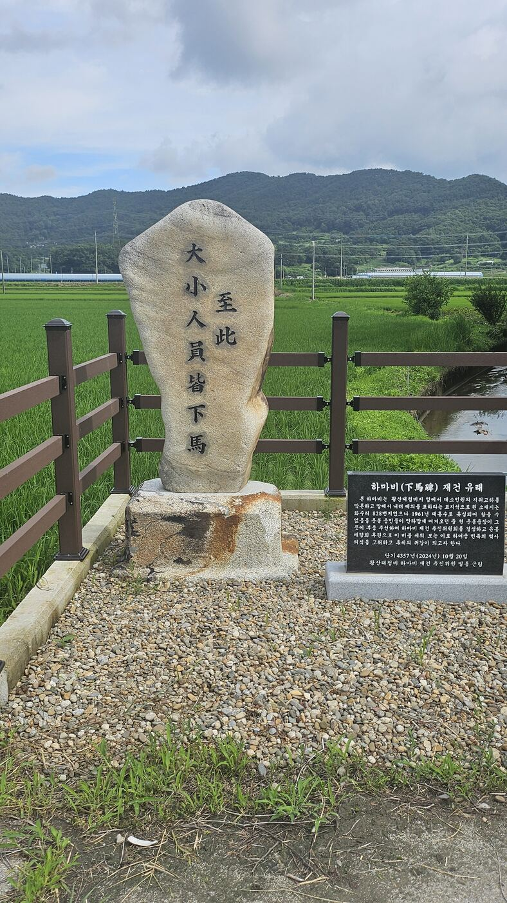
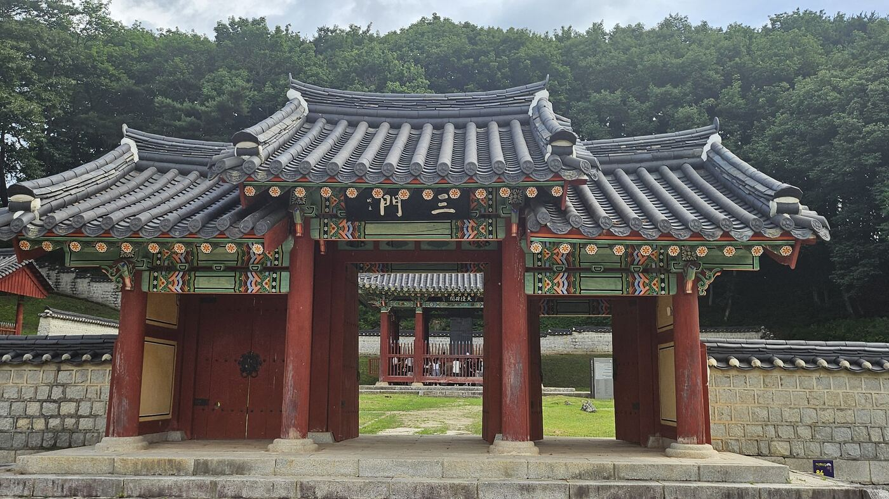
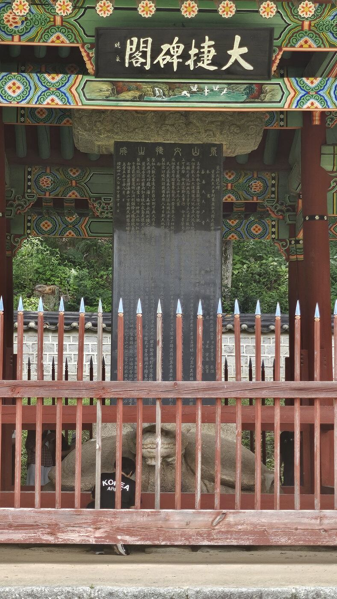
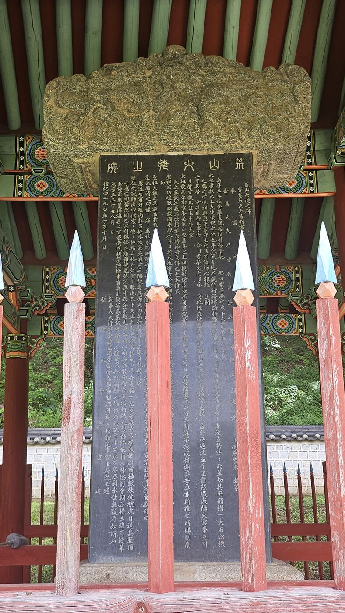
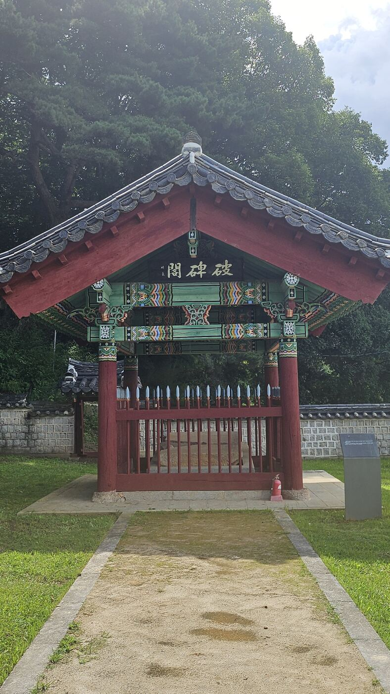
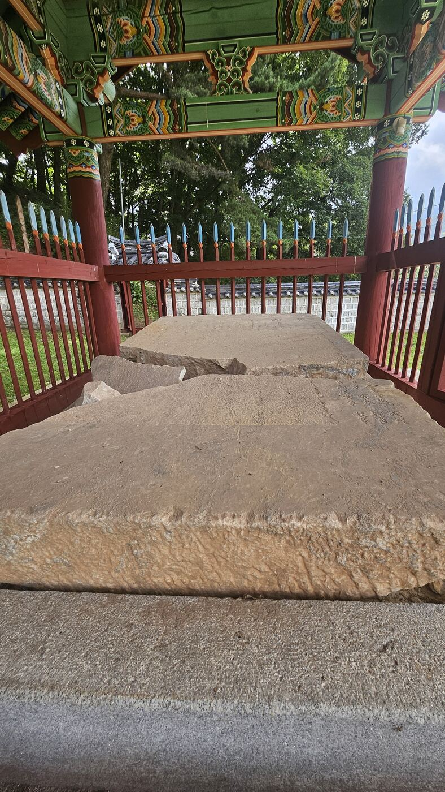
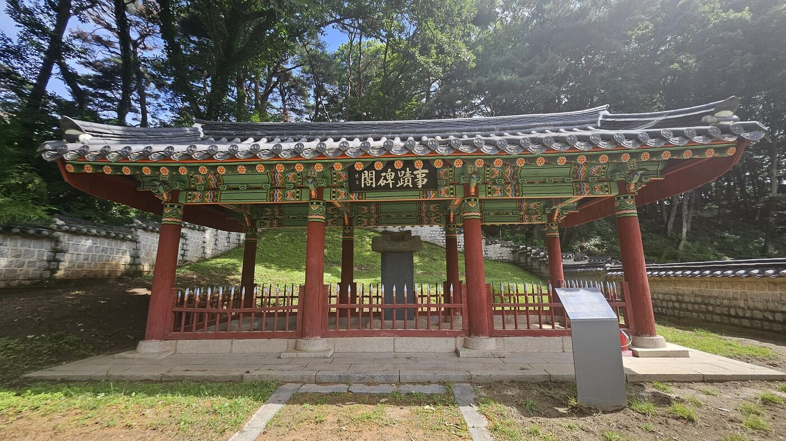
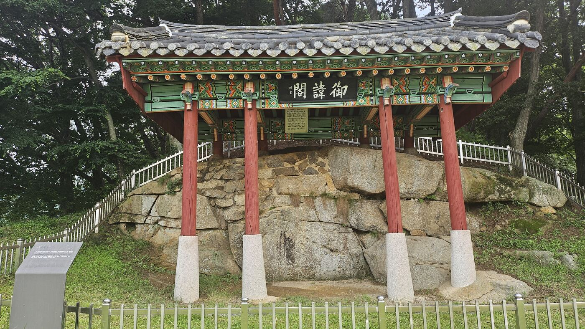
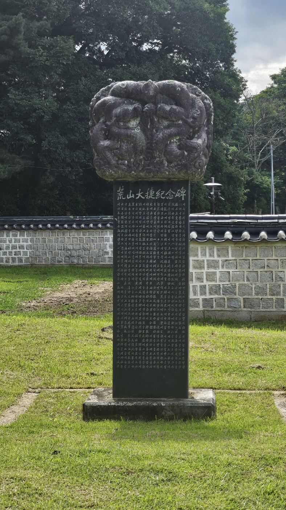
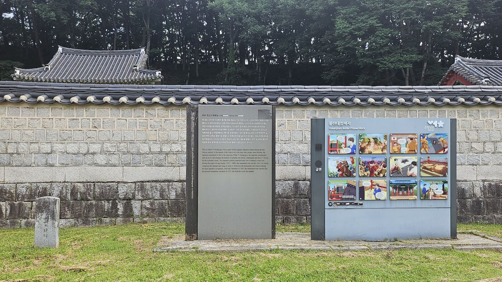

지금의 남원 운봉, 좁은 골짜기 하나를 사이에 두고 두 군대가 마주 섰다. 한쪽은 온 나라를 약탈하며 여기까지 밀고 올라온 왜구의 정예 부대. 다른 한쪽은 나라의 마지막 카드로 급파된 한 장수의 군대였다. 이 싸움에서 지면, 다음은 개경 코앞이었다.
왜구, 나라의 숨통을 조르다
1380년 무렵 고려는 왜구 때문에 나라가 흔들릴 지경이었다. 지금으로 치면 한 달이 멀다 하고 해안 마을마다 도둑떼가 몰려와 곡식을 털고 집을 불태우는 상황이 수십 년간 계속됐다고 생각하면 된다. 그해 8월 왜구는 500척에 가까운 배를 이끌고 금강 하구로 쳐들어왔다가 고려군에 막혀 퇴로가 끊기자, 내륙 깊숙이 남원 운봉까지 밀고 들어와 진을 쳤다. 이 부대의 대장이 바로 '아지발도'다.
아지발도는 머리부터 발끝까지 갑옷으로 감싸고 있어 화살이 튕겨 나갈 정도였다고 전해진다. 지휘관이 화살에 끄떡없으니 병사들의 사기도 꺾이지 않았다. 조정은 삼도도순찰사로 이성계를 급파했다. 북방에서 여진족을 상대로 잔뼈가 굵은 무장을, 이번엔 남쪽 끝까지 내려보낸 것이다.
투구 꼭지를 맞춘 화살 한 발
전투가 길어지자 이성계는 아지발도의 약점을 찾아냈다. 갑옷은 완벽했지만 투구 꼭지 아래, 턱을 드러내는 틈이 있었다. 이성계가 활을 쏘아 투구 꼭지를 정확히 맞혀 떨어뜨리자, 아지발도가 반사적으로 턱을 드러냈다. 그 순간 의형제 이지란(퉁두란, 이두란으로도 불린다)이 두 번째 화살을 날려 명중시켰다. 대장을 잃은 왜구는 순식간에 무너졌고, 고려군은 이 기세를 몰아 적을 섬멸했다.
투구는 완벽한 갑옷이었다. 완벽함이 무너지는 건 언제나 딱 하나, 틈 하나 때문이다.
— 황산대첩, 승부의 순간지금 대첩비지 근처에는 '피바위'라는 바위가 남아있다. 아지발도가 흘린 피가 이 바위에 스며들었다는 이야기가 마을에 전해 내려온다.
'피바위' 이야기는 어디까지나 구전으로 내려오는 전승이지, 기록으로 확인된 사실은 아니다 — 답사를 갈 때는 이 구분을 해두는 게 좋다. "강물이 왜구의 피로 붉게 물들어 일주일간 물을 마시지 못했다"는 이야기도 같은 계열의 전승으로 이해하면 된다.
황산에 내려온 게 이성계와 이지란 같은 무장들뿐이었던 건 아니다. 이 부대에는 '종사관(從事官)'이라는 이름으로 종군한 문신 한 명이 있었는데, 바로 정몽주다. 종사관은 지금으로 치면 야전사령부의 행정·기획 참모에 가까운 자리로, 병력 편성과 보급, 문서 처리 같은 군의 살림을 총괄했다. 정몽주는 이미 1363~1364년 동북면에서 여진족을 토벌할 때부터 이성계와 함께 종군한 이력이 있었고, 황산에서도 그 역할을 그대로 이어받아 전장 끝까지 동행했다. (일부 기록은 그를 '조전원수(助戰元帥)'로 표기하기도 한다 — 직함 표기가 사료마다 조금씩 다르다는 점을 밝혀둔다.)
칼을 든 적은 없지만, 이 전투의 승리는 그의 몫이기도 했다. 그리고 이 인연은 전투가 끝난 뒤에도 이어진다. 개선 길에 들른 전주 오목대의 승전 잔치, 그 자리에서 이성계가 흘린 말 한마디에 정몽주가 말을 몰아 뛰쳐나가는 장면 — 이 시리즈의 다음 답사지, 오목대에서 이어지는 이야기다.
비석 하나가 겪은 일
황산대첩 그 자체보다 더 파란만장한 건 이 승리를 기록한 비석의 운명이다. 승전 197년 후에야 비석이 세워졌고, 그마저도 일제강점기에 산산조각이 났다. 지금 답사지에서 보는 건물들은 이 굴곡진 시간을 그대로 보여주는 흔적이다.
말에서 내리는 자리부터, 이름을 새긴 바위까지
실제로 걸어본 순서대로 정리한다. 가산마을을 지나면 가장 먼저 만나는 게 하마비, 마지막으로 만나는 게 기념비다.
1 · 하마비 — "누구든 여기서부터는 걸어가라"

절 입구의 "일주문 지나면 마음을 가다듬으라"는 표지판과 같은 역할이다. 왕도 신하도 여기서부터는 말에서 내려 걸어 들어가야 했다 — 그만큼 이 자리를 신성하게 여겼다는 뜻이다.
2 · 삼문 — 비석으로 가는 정식 입구

3 · 대첩비각 — 비석의 본체


이 안에 서 있는 비석이 1577년 선조의 명으로 세운 원래 비문을, 1957년에 그대로 다시 새겨 세운 것이다. 도서관이 불에 타면 사서들이 예전 목록을 보고 책을 한 권씩 다시 필사해 채워 넣는 것과 같은 이치다 — 원본은 사라졌지만, 그 안에 담긴 글자와 뜻은 그대로 되살렸다.
4 · 파비각 — 부서진 조각을 그대로 둔 자리


대첩비각이 상처를 치료하고 다시 세운 자리라면, 파비각은 상처를 굳이 봉합하지 않고 흉터 그대로 전시해 둔 자리다. 두 건물을 나란히 보면 이 유적이 말하려는 게 더 분명해진다 — "우리는 이겼고, 그다음엔 이런 일도 겪었다"는 두 문장을 한 자리에서 함께 보여주는 셈이다.
5 · 사적비각 — 또 하나의 기록

6 · 어휘각 — 이름을 새긴 바위를 지키는 집

운동경기에서 우승컵에 선수 전원의 이름을 새기는 것과 같은 마음이다. 이성계는 승전 다음 해인 1381년, 이 바위에 자기 이름 하나만이 아니라 함께 싸운 장수 열두 명의 이름을 모두 새기게 했다. 다만 이 각자(刻字)도 1945년 일제가 정과 망치로 훼손했고, 지금 남은 흔적은 희미하다. 지금의 어휘각 건물은 1973년에 다시 지은 것이다.
7 · 황산대첩기념비 — 가장 나중에 세운 비석


황산 이후, 이성계는 다른 사람이 됐다
이성계는 황산대첩 이전에도 이미 고려 최고의 무장이었다. 여진 토벌, 홍건적 격퇴 — 가장 어려운 전장마다 조정이 그를 보냈다. 하지만 그때까지 그는 '북방 최고의 장군'이었다. 전라도 끝까지 내려와 왜구의 정예를 무너뜨린 이 전투를 계기로, 그는 전국 백성이 이름을 아는 장수가 됐다.
무장은 아무리 공을 세워도 정치를 하지는 못한다. 고려의 정치는 권문세족이 움직였고, 장군은 나라를 구해도 나라를 바꾸지는 못하는 게 그때까지의 룰이었다. 그런데 황산대첩 이후 이성계의 이름은 국경 수비대장 수준을 넘어, 온 나라가 알아보는 이름이 됐다. 이 전국적 신망이야말로, 훗날 그가 위화도에서 회군을 결정할 수 있었던 가장 현실적인 밑천이었다.
승전보를 울리며 개경으로 개선하던 길, 이성계는 고향인 전주에 들러 일가친척을 모아놓고 잔치를 벌인다. 그 자리에는 황산 전장부터 줄곧 그의 곁을 지켰던 종사관 정몽주도 있었다. 이성계가 그 자리에서 아무도 예상하지 못한 말을 시로 남기자, 정몽주는 잔치 자리를 뛰쳐나간다.
승리 다음에 찾아온 질문
그러나 황산의 승리는 끝이 아니었다. 전쟁에서 돌아온 영웅은 이제 나라의 운명을 고민하기 시작한다. 그 고민이 머문 곳이 바로 오목대였다.
- 위치
- 전북 남원시 운봉읍 화수리 일대 (람천 변)
- 지정
- 사적 — 남원 황산대첩비지
- 구성
- 하마비 · 삼문 · 대첩비각 · 파비각 · 사적비각 · 어휘각 · 황산대첩기념비
- 가는 길
- 운봉읍 화수리에서 전촌마을을 거치거나, 가산리 가산마을을 거쳐 진입 — 가산마을 방향으로 가면 하마비를 가장 먼저 만난다
- 관람 방식
- 야외 개방 유적지. 상세 개방 시간·주차 정보는 남원시 문화관광 홈페이지에서 최신 내용을 확인하는 게 정확하다